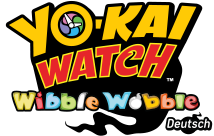

GAMING

Yo-kai Watch
Wibble Wobble
Wib Wobs verbinden, Yo-kai sammeln und wieder zusammen spielen. Ein inoffizieller Fanserver von der Community für die Community.
PROJEKTE, IDEEN & EIN BISSCHEN ICH
Hey, ich bin Hachiro! Hier findest du die Projekte, an denen ich arbeite – und was mich gerade beschäftigt.

Wib Wobs verbinden, Yo-kai sammeln und wieder zusammen spielen. Ein inoffizieller Fanserver von der Community für die Community.
EIN BISSCHEN PERSÖNLICHER
Die Person hinter dieser kleinen Projektecke.
Ich bin Hachiro und arbeite aktuell als Owner an Yo-kai Watch Wibble Wobble. Auf dieser Website sammle ich meine Projekte und gebe dir einen Einblick in das, woran ich gerade arbeite.
Den Anfang macht Wibble Wobble: ein inoffizieller Community-Fanserver, der das gemeinsame Spielen wieder möglich macht. Weitere Projekte bekommen hier mit der Zeit ihren eigenen Platz.
Meine Projekte ansehen